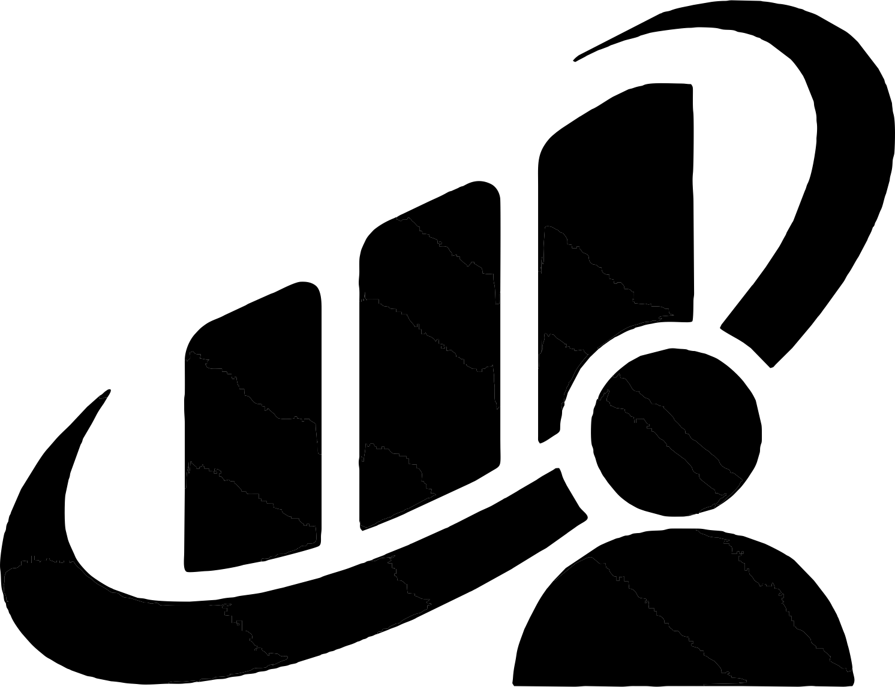

01⌕
Understand
Map the real process, spot friction and define what better looks like.
DISCOVERThoughtful AI and automation that connect your tools, simplify everyday processes and give your team more room to do meaningful work.

System overview
Conceptual workflow preview
Workflow status
ExampleConnected apps
FlexibleDepends on your tools
Designed for
Your processA tailored approach
A connected workflow
From incoming request to completed action
The best system doesn't force you to start over. It helps the tools you already use share information and work in sync.
Connect your workflow →Microsoft

OpenAI
Automation

ERP / CRM

Cloud tools

Team apps
Illustrative integration ecosystem. Actual connections depend on your existing tools and requirements.
TECHNOLOGIES THAT CAN BE PART OF THE ECOSYSTEM
Good automation is not a black box. You should be able to see what happens, why it happens and where people stay in control.
Map the real process, spot friction and define what better looks like.
DISCOVERChoose the right tools and shape a practical, connected solution.
PLANBuild the workflow, connect your apps and test every handoff.
IMPLEMENTMonitor how it performs and refine the system as needs change.
OPTIMISEThe right solution starts with your business, not with a tool looking for a problem.
Find practical opportunities for AI in your day-to-day operations, with a clear plan for responsible adoption.
CLARITY BEFORE COMPLEXITY ↗
Reduce repetitive handoffs and connect everyday tasks into dependable, visible workflows.
LESS REPETITION. MORE FLOW ↗
Help your existing platforms exchange information, stay in sync and support one joined-up process.
MAKE YOUR TOOLS WORK TOGETHER ↗
Automation should make work easier without making it harder to understand or control. We consider access, oversight and clear ownership as part of the design.
Keep people involved where judgement and approval matter.
Consider who and what should have access to each system.
Make workflow status and exceptions easier to understand.
An illustrative principle, not a claim of certification or a guarantee of security.
Access
Oversight
Clarity
Tell us where work gets stuck. We'll explore what a more connected, practical system could look like.
Start with a conversation.
A few details are enough to get the conversation moving.